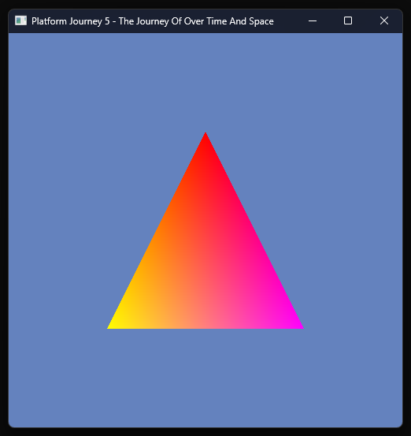
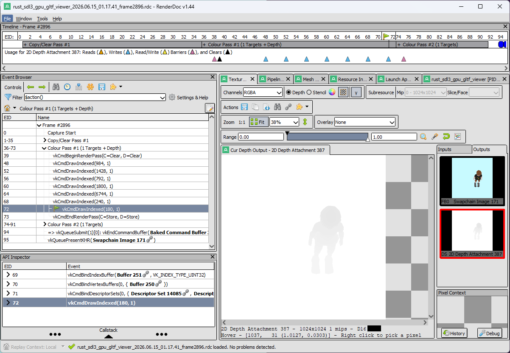

Back
What is this?
This is what I have learned so far about 3D rendering in a project using:
the programming language Rust,
the development library SDL3
(specifically this implementation in Rust),
with the 3D model format GLTF
(specifically this Rust library),
and the OpenGL Shading Language.
Also I'm on a windows computer and I have a Nvidia GPU,
and I'm using Vulkan via SDL3's GPU API
Here's the github link to my project so far.
Ideally it should run with a "cargo run" command if you have Rust and the Vulkan
SDK installed.
Why am I writing this?
I couldn't find a tutorial online about the exact set of technologies I used so I decided to write down what I've
learned. If you notice anything that I'm wrong about, or if you have any questions, please email me at
kramff@gmail.com!
Rendering a triangle
I followed this
tutorial by Hamdy Elzanqali about how to render a triangle using the SDL GPU API using C++. It's mostly the same
code in Rust. Here's my rendered triangle:

To render a triangle:
Initialize SDL3, get the video subsystem, make a window, create the gpu device.
Create the vertex shader and fragment shader. I used the include_bytes!() macro to directly include the
compiled .spv shader files. I'll explain the actual shader code later on.
Setup the vertex buffer with a vertex attribute for x, y, z position. I made a struct Vertex {...} with
c_floats for x, y, and z. The c_float type is basically just an f32 as far as I can tell. Later I added u and v for
the texture coordinates, r, g, b, and a for the vertex color, 4 weight values (w1, w2, w3, w4), 4 joint values (j1,
j2, j3, j4), and 4 morph targets (m1, m2, m3, m4). Joints I used c_uint, and morphs I used arrays of c_floats:
[c_float; 4].
I found it convenient when defining the vertex attributes to keep a running total of the offset rather than
calculating it from scratch each time, like this: vertex_attribute_offset += size_of::<f32>() as u32 *
2;
Create the graphics pipeline. Right now I just have one pipeline but my understanding is that you can have several,
each suited for a certain kind of rendering task, so you can use different shaders on different things. (For example,
one pipeline for an animated character where the vertices have joints and weight attributes, and a different pipeline
for a static background element.)
Start a copy pass, and upload the vertices for the triangle into a vertex buffer in the gpu by using a transfer
buffer. After making a transfer buffer, you to "map" it in order to access its data from your application. You have
the option to use "cycling" it which is explained here on the SDL3 wiki. Then, you access it as
a mutable slice using mem_mut (which I think might be a rust-specific step). Then you can copy your
vertex data into the transfer buffer via that mutable slice, I used this:
for (index, &value) in vertices.iter().enumerate() {
buffer_mem_map_mem_mut[index] = value;
}
Unmap the mapping once the data is copied in. Then, set the data location of the transfer buffer and target
region of the vertex buffer. In my code it's just 0 for both offsets, but a more advanced program might do something
fancy with the offsets. Finally, upload to the gpu buffer to actually get the data into the vertex buffer. Then end
the copy pass.
That's everything that's needed for setup. To actually render the triangle, first get a command buffer. Then, get the
swapchain texture (which is just the texture that is displayed in the window). I used
wait_and_acquire_swapchain_texture because the other option, acquire_swapchain_texture
seemed more difficult, as explained here
on the SDL wiki.
Then, create a color target, which lets you pick a color to clear the swapchain texture to. (If you don't have a
clear_color set then you can cause the "hall of mirrors" effect which looks funny.)
Then you can start a render pass. Once you have that, you can bind the pipeline to it. Next you bind the vertex buffer
to the render pass, using a BufferBinding, which lets you change the offset of where to look in the buffer. I haven't
used anything but 0 for the offset but I assume this would be used to put multiple parts of a model into a single
buffer. Finally, call the draw_primitives function on the render pass, which should draw the triangle,
assuming everything is set up right. End the render pass and submit the command buffer.
To render a gltf model instead of just a triangle:
Instead of 1 triangle there will be many. The coordinates for these triangles will be loaded in from a file
instead of hardcoded in. The vertices will not be listed in sets of 3 triangles, but will be instead referred to by
indices so
that the vertices can be reused for multiple triangles.
I used this to load the model:
let (document, buffers, images) = gltf::import(model_path).unwrap();
The variable document will be a big data object with lots of things to examine (it's sorta JSON-ish),
buffers will be a vector of all the buffer data in the gltf (which you hopefully won't need to look at
directly), and images will be a vector of all the images (textures) for the model that you can upload to
the GPU.
This gltf tutorial was a bit help in figuring
out the gltf format.
I also found this reference guide very helpful.
The thing in the gltf format that actually has vertex data is called a "primitive". One or more primitives are in each
"mesh", and one or more meshes are in each gltf model.
(primitive is one instance of a primitive inside mesh.primitives(), and mesh is
one instance of a mesh inside document.meshes())
With this gltf library there's a thing called a "reader" that you have to use to get the actual data out in some
places. I found this code online (several places, from tutorials and other finished projects) for how to actually make
the reader:
let reader = primitive.reader(|buffer| Some(&buffers[buffer.index()]));
This is a "reader" for getting the data out of vertices. For now just use reader.read_positions() and
reader.read_indices(). With the indices, vertices that are used for multiple triangles don't need to be
uploaded multiple times and instead can be referenced by index. The index buffer will have to be uploaded to another
buffer (an index buffer), and then before rendering that index buffer will have to be bound as well, and the draw
function will have to change to draw_indexed_primitives.
I kept the entire "document" from the gltf file so I could use it later at render-time to traverse the nodes structure
and get to each primitive inside each mesh. I couldn't figure out how to do a recursive function in Rust so instead I
have a vector of remaining nodes that haven't been visited that I pop() one off at a time and add all the
children of that node to. Rather than just the nodes, I keep a transform with each node in a tuple: (node, transform).
This works out to be roughly the same as how the recursive function I wanted would work.
All the images in images (from the import(path) of the model) can be uploaded as textures to
the GPU. Keeping track of the buffers in the same order as the model describes them in lets you reference them by
index when rendering. Each material can have several images that describe different aspects of the material, but so
far I am just using the base color texture:
let base_color_texture_option = primitive
.material()
.pbr_metallic_roughness()
.base_color_texture();
However some materials may not have a texture for the base color. For that case I uploaded a 1x1 white pixel as a
texture to use, and then check if the base color texture is None or Some:
if let Some(base_color_texture) = base_color_texture_option {
// Texture has image
let image_index = base_color_texture.texture().source().index();
let image_data = model.images.get(image_index).unwrap();
// Bind sampler
let texture_sampler_binding = TextureSamplerBinding::new()
.with_texture(&image_data.texture)
.with_sampler(&image_data.sampler);
render_pass.bind_fragment_samplers(0, &[texture_sampler_binding]);
} else {
// No image - use dummy image
// Bind sampler
let texture_sampler_binding = TextureSamplerBinding::new()
.with_texture(&dummy_image.texture)
.with_sampler(&dummy_image.sampler);
render_pass.bind_fragment_samplers(0, &[texture_sampler_binding]);
}
Alongside the textures, you also need to create a sampler, which is an object that describes information about how the
texture is used. The gltf has sampler data but so far I haven't actually used that data, instead I'm just using
placeholder data:
let sampler_create_info = SamplerCreateInfo::new()
.with_min_filter(Filter::Nearest)
.with_mag_filter(Filter::Nearest)
.with_mipmap_mode(SamplerMipmapMode::Nearest)
.with_address_mode_u(SamplerAddressMode::Repeat)
.with_address_mode_v(SamplerAddressMode::Repeat)
.with_address_mode_w(SamplerAddressMode::Repeat);
When creating the texture, I took the format from the gltf's image and did my best to match it up with SDL's Texture
Formats, but it doesn't match up perfectly. Also, I'm not entirely sure whether these should be Unorm or sRGB.
let format_mode = match image.format {
gltf::image::Format::R8 => TextureFormat::R8Unorm,
gltf::image::Format::R8G8 => TextureFormat::R8g8Unorm,
gltf::image::Format::R8G8B8 => TextureFormat::R8g8b8a8Unorm,
gltf::image::Format::R8G8B8A8 => TextureFormat::R8g8b8a8Unorm,
gltf::image::Format::R16 => TextureFormat::R16Unorm,
gltf::image::Format::R16G16 => TextureFormat::R16g16Unorm,
gltf::image::Format::R16G16B16 => TextureFormat::R16g16b16a16Unorm,
gltf::image::Format::R16G16B16A16 => TextureFormat::R16g16b16a16Unorm,
gltf::image::Format::R32G32B32FLOAT => TextureFormat::R32g32b32a32Float,
gltf::image::Format::R32G32B32A32FLOAT => TextureFormat::R32g32b32a32Float,
};
The vertices will need additional attributes, U and V, that represent texture coordinates. (U and V don't stand for
anything, they're just the letters before X, Y, and Z). The vertex shader only needs to pass these values to the
fragment shader:
// Outside of the main function:
// u, v texture coordinate
layout(location = 1) in vec2 tex_coord;
// u, v texture coordinates to pass to fragment shader
layout(location = 0) out vec2 v_tex_coord;
// In the main function:
// Pass texture coordinate to fragment shader
v_tex_coord = tex_coord;
Then, in the fragment shader, use these coordinates with the sampler2D uniform by calling the texture
function to get the color for that fragment:
// Outside of the main function:
// u, v texture coordinates
layout (location = 0) in vec2 v_tex_coord;
// Sampler uniform
layout (set = 2, binding = 0) uniform sampler2D texture_sampler;
// In the main function:
vec4 texture_color = texture(texture_sampler, v_tex_coord);
Now that there's a texture on the model, the application needs to do depth testing to prevent it from looking
"inside-out". A depth stencil is a technique to make the renderer keep track of how "deep" a fragment is, and then
skip fragments that are "deeper". In other words, if a few fragments would land on the same pixel, only the closest
fragment gets rendered. Most of the setup for this is in the application code, the only thing the shaders need to do
is pass an appropriate z value to use as the depth value. The depth should be between 0 and 1, with 0 being the
closest to the camera and 1 being the farthest from the camera.
I learned this from this tutorial from Learn
OpenGL which explained it very well. The formula I landed on to calculate my depth is:
float depth = (1.0f / (position4.z + 1.1f) - 10.0f) / -10.0f;
Then, depth is passed as the z value to the fragment shader.
Back in the application code I added a Depth Stencil State to the pipeline, which needs a "Compare Op", I used "Less"
which means if the depth of a fragment is less than the current depth it takes precedence and overwrites the previous
fragment. "Greater" would also be fine, but the depth value calculated in the shader would have to be inverted.
For the depth stencil's texture, the usage should be both Sampler and Depth Stencil target. I'm not sure if there's a
"proper" rust way to do this but I just did this:
.with_usage(TextureUsage::SAMPLER | TextureUsage::DEPTH_STENCIL_TARGET)
You also need a Depth Stencil Target Info when starting a Render Pass. For this Depth Stencil Target Info the Clear
Depth should be 1.0 (or 0.0 if using the "Greater" Compare Op) because this is the value that the depth texture is
reset to when starting a new frame, and the depth calculation for each vertex should be less than that.
If you want to see the depth buffer, RenderDoc can show the depth buffer without needing to change your code:

But you could also display the depth as your output, explained
here.
Animating the gltf model
I mostly learned from these tutorials. In GLTF,
animations can either be on the transformations of a node (meaning the translation, rotation, or scale, or multiple of
those at once), or they can be "morph targets", or "vertex skinning".
Transformation animations are relatively straightforward. During the animation, the nodes of the model are transformed
by an animation by translating, rotating, or scaling. Importantly, if the node already has a transformation, the
animation transformation "overrides" the original transformation. So if the node normally has a transform of
translating by 1 on the x axis, and an animation causes animates it between translating 0.9 and 1.1 on the x axis, the
original transformation should not also apply because then it would be translating by 1.9 and 2.1, not 0.9 and 1.1.
Morph targets means that the vertices all move by some amount to adjusted positions. All the vertices (that are
affected by the animation) will have an offset for each morph target
SDL3 GPU api
Shader
glsl
spv
Vertex
Vertex attributes
Index (For vertex shader)
Fragment
Buffer
Uniform
Depth testing, Depth Stencil, stencil testing
Depth testing
Depth testing is a feature that keeps track of how deep a rendered fragment is so that if multiple fragments happen
to land on the same pixel, only the closest one actually gets rendered. I learned from this page: Learn OpenGL's explanation of Depth Testing.
Without depth testing the model may look alright at certain perspectives but look bizarre and inverted from other
angles.
Swapchain
Pipeline: A pipeline is a configuration that includes a vertex shader, fragment shader, and a bunch of settings. You
can have multiple pipelines which would make sense
Render pass
Image
Texture
Sampler
Command Buffer
Unorm, srgb
Copy pass
Binding buffers and samplers
Drawing primitives - indexed or not
Tsoding's 3D rendering video This is a great video that
explains the basics of 3D rendering and projecting points onto the screen.
GLSL
Version 460: I used version 4.6, there seems to be small but significant changes between versions so double check
what
version a tutorial or example is using.
Links to information
Compiling with glslc
Types
Layout
Location
vertex attributes "in"
vertex-to-fragment attributes "out"
fragment attributes "out"
uniform
storage buffer
data packing
std140
std430
set
binding
buffer
arrays
preset/included values: gl_position, others
z = depth
sampler2d
RenderDoc is a graphics debugger program that lets you see step by step what is
happening in your frame. It's kind of bewildering at first but it's really helpful, especially when your code looks
correct but nothing is showing up in your graphics window.
Launching your application
taking a capture
Event browser
texture viewer
mesh viewer
Debug this vertex -> debugging shaders
View a buffer -> View Contents
Gltf
Links to info
gltf viewer https://gltf-viewer.donmccurdy.com/ this one uses Three.js so looking at the source code may not be
terribly helpful but it's nice to have a quick way to check what a model looks like
gltf viewer https://github.khronos.org/glTF-Sample-Viewer-Release/ This is an official gltf viewer that also has a
bunch of default models to look at.
Default models https://github.com/KhronosGroup/glTF-Sample-Models speaking of default models, if you want to test a
bunch of models.
Spec sheet https://registry.khronos.org/glTF/specs/2.0/glTF-2.0.html
What to extract and what to leave in the document
gltf, glb
Node
Transform
Mesh
Primitive
Image
Texture
Sampler (Images)
Material
Animation
Channels
Samplers (Animation)
Interpolation
Morph Targets
Vertex Skinning
Inverse Bind Matrix
Rust
Using Rust with a C library
unsafe, SDL_GPU things
Using Rust with GLSL
Reader
build.rs
build-from-source (instead of linking)
Blender is a 3D modeling program. I followed this youtube tutorial by SELS to make my 3d model. (I am
not an artist, and gained a lot of respect for actual 3d modelers in the course of this project.) There's lot of
tutorials online about using Blender but here's a couple things I figured out that I found confusing. Blender does
seem to change a bunch between versions so some of this advice may become out of date.
Blender can both export to and import from GLTF files but some details seem to get lost in the process, so I think
you want to keep the .blend files as the "source" files and consider the .glb as the "compiled" file. It might also
make sense to export to gltf and import back into Blender to see what changes, to find out if you're trying to do
something that isn't supported in gltf. For example, that youtube tutorial goes over setting up a material with
nodes to move the UV's on the character's face to make their facial expression change, but gltf does not (as far as
I can tell) keep any of that node setup besides connecting the texture and vertex colors. Also, the scene heirarchy
is different, and the bones turned into spheres, and I'm sure there's more differences.
Press Shift C to put the camera in a neutral, reasonable spot, if you've zoomed in or out or gone way too far to the
side.
The tabs at the top ("Layout", "Modeling", "Sculpting", "UV Editing", "Texture Paint", "Shading", "Animation",
"Rendering", "Compositing", "Geometry Nodes", "Scripting") are Workspaces, which are a configuration of windows and
menus open, but don't actually enforce what can be done with them. If you screw up one of your default Workspaces
you can get it back with the little "+" tab and select it from the menu.
You have to select an object in Object Mode before you can go to Edit Mode and edit it
The options in the top right for how a model is shown, which are independent for each Workspace
3D Modeling
UV
U and V are just the two letters before X, Y, and Z. They represent what part of the 2d texture image gets drawn
onto what part of the model.
Seams
UV Unwrapping
Texture
Texture Painting
Note that images are saved separately from the model, and you can edit them externally
Bones
How to see the bones "inside" your model
Rigging
Pose mode
Advanced Rigging - how to get the neat gears and arrows instead of just bones
Animations: I went to the Animation Workspace, then selected the Dope Sheet Editor Type with the Action Editor
editing context. Then, for each animation I wanted to make I clicked the "New Action" button in the middle (looks
like a copy icon with two pages), then renamed the newly created action, and clicked the "Fake User" button (right
next to "New Action", looks like a shield) to make sure it gets saved. If you don't click the "Fake User" button
then that animation doesn't get saved when you close Blender, but weirdly it does get exported to a gltf file in the
meantime. I think what's going on is that there must be something that uses these Actions somewhere else in Blender
so they don't need to be "Fake User" but I don't know enough Blender to say for sure.
Other stuff
Imgui
Matrix
Should you use [[f32; 4]; 4] or [f32; 16]? Probably doesn't matter too much either way. I went with the 4x4 version
because that's the format the gltf library provided.
Identity Matrix: The "nothing" matrix, with all 0's except for 1's going diagonally. like this: [[1, 0, 0, 0], [0,
1, 0, 0], [0, 0, 1, 0], [0, 0, 0, 1]].
Translate
Rotate
Scale
Multi-axis formulas for the above 3
Matrix * Vector
Matrix * Matrix
The order matters
Quaternion
Quaternion * Quaternion: Dot product of 2 matrices is kind of like the "distance" between the two quaternions
Quaternion -> Matrix
Inverting a matrix: May not be necessary in most cases
Flipping a matrix over it's diagonal
LLDB
Installing lldb
breakpoints
looking at variables
rust doesn't let you run functions I think
Language servers
rust-analyzer
rustfmt
glsl language server (check which one i installed)